통신선로산업기사 (2002-05-26 기출문제)
1과목: 디지털전자회로
1. 다음 진리표의 Karnaugh map을 작성한 것중 옳은 것은?
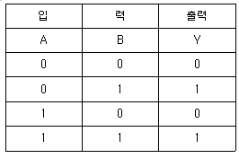
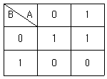
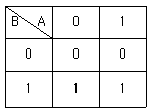
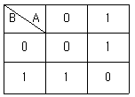
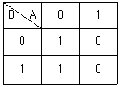
(정답률: 알수없음)

2. Schmitt 트리거회로의 응용 예로 틀린 것은?
- 전압비교회로
- 방형파회로
- 쌍안정회로
- 증폭회로
(정답률: 알수없음)
3. 반가산기(Half-adder)의 구성 요소로 맞는 것은?
- JK 플립플롭
- 두개의 AND 게이트
- EOR과 AND 게이트
- 1개의 반동시 회로와 OR 게이트
(정답률: 알수없음)
4. 다음 카아르노프도의 간략식은?
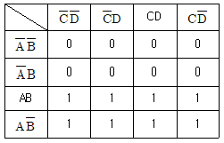
- Y = A
- Y = B
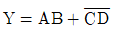
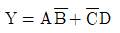
(정답률: 알수없음)
5. 그림과 같은 회로의 출력 논리식이 아닌 것은?
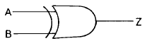
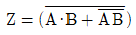
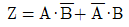
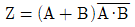
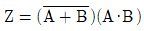
(정답률: 알수없음)
6. 다음 그림의 회로는 무슨 회로인가?
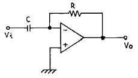
- 미분기
- 적분기
- 가산기
- 증폭기
(정답률: 알수없음)
7. 다음 중 직류전원회로의 구성 순서로 옳은 것은?
- 정류회로 → 변압회로 → 평활회로 → 정전압회로
- 변압회로 → 정류회로 → 평활회로 → 정전압회로
- 변압회로 → 평활회로 → 정류회로 → 정전압회로
- 변압회로 → 정류회로 → 정전압회로 → 평활회로
(정답률: 알수없음)
8. 다음의 발진회로에서 L = 10[mH], C1=C2=800[pF]일 때 공진주파수는 약 몇 [kHz]인가?
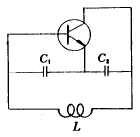
- 10[kHz]
- 20[kHz]
- 40[kHz]
- 80[kHz]
(정답률: 알수없음)
9. 그림(a)의 회로에 그림(b)와 같은 파형전압을 인가하면 출력 전압파형은?
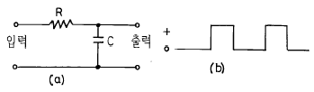
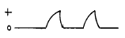
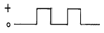
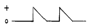
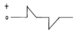
(정답률: 알수없음)
10. 다음은 리플 카운터(ripple counter)이다. 초기 상태 A=0, B=0, C=0 이었다면 클럭 펄스가 12개 인가된 후의 상태는?
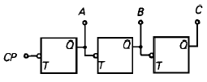
- A=0, B=0, C=1
- A=0, B=1, C=1
- A=1, B=1, C=0
- A=1, B=0, C=0
(정답률: 알수없음)
11. 실리콘 제어 정류소자(SCR)의 전류 - 전압 특성곡선은 어느 것인가?
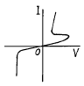
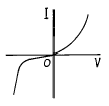
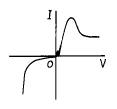
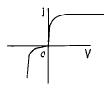
(정답률: 알수없음)
12. 트랜지스터 증폭회로에서 저항 R1의 역할은?
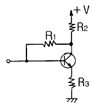
- 입력 임피던스 조절
- 바이어스 안정화
- 부궤환 작용
- 부하저항
(정답률: 알수없음)
13. 논리식 A(A+B+C)를 간단히 하면 어느 값과 같은가?
- 1
- 0
- B+C
- A
(정답률: 알수없음)
14. 다음 그림은 어떤 플립 플롭(Flip-Flop)회로인가?
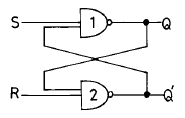
- Basic F-F
- J-K F-F
- D F-F
- T F-F
(정답률: 알수없음)
15. 에미터 접지일 때 전류증폭율이 각각 hFE1, hFE2인 두개의 트랜지스터 Q1과 Q2를 그림과 같이 접속하였을 때의 콜렉터 전류 Ic의 크기는?
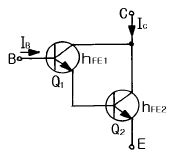
- hFE1·hFE2·IB
- hFE1· hFE2)·IB
- hFE2(hFE1+1)·IB
- hFE1· IB + hFE2(hFE1+1)·IB
(정답률: 알수없음)
16. 그림과 같은 에미터 저항을 가진 CE 증폭기에서 에미터 저항 RE의 가장 중요한 역할은 무엇인가?
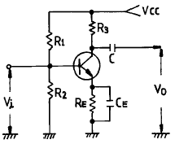
- S(안정계수)를 감소시켜 동작점이 안정된다.
- 주파수 대역을 증가시킨다.
- 바이어스 전압을 감소 시킨다.
- 증폭회로의 출력을 증가시킨다.
(정답률: 알수없음)
17. 진폭 변조파의 전압 e(t)가 다음과 같이 표시되었을 때 변조도는 몇[%]인가?
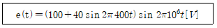
- 80
- 70
- 40
- 20
(정답률: 알수없음)
18. 다음 궤환증폭기의 특성에 관한 설명중 틀리는 것은?
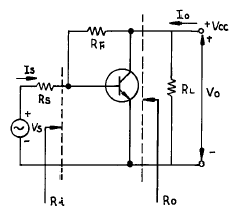
- 궤환으로 입력 임피이던스 Ri는 감소한다.
- 궤환으로 출력 임피이던스 Ro는 감소한다.
- 궤환으로 전류이득 Io/Is는 감소한다.
- RF가 작을수록 출력전압 Vo는 커진다.
(정답률: 알수없음)
19. 주파수 변조방식이 진폭변조방식보다 좋은 점이 아닌 것은?
- S/N비가 개선된다.
- 에코우의 영향이 적다.
- 초단파대의 통신에 적합하다.
- 점유 주파수 대역폭이 좁아 송신효율이 좋다.
(정답률: 알수없음)
20. 연속적으로 반복되는 펄스 파형에서 펄스 1개의 "1" 구간이 1[msec]이고, "0" 구간이 1[msec]이다. 이 파형의 주파수는 얼마인가?
- 0.5[KHz]
- 1[KHz]
- 2[KHz]
- 1[MHz]
(정답률: 알수없음)
2과목: 유선통신기기
21. 자유공간에서의 빛의 속도는 약 30만km이다. 굴절율이 1.5인 SM Fiber에서의 전파 속도는?
- 35만km/s
- 30만km/s
- 25만km/s
- 20만km/s
(정답률: 알수없음)
22. 전자교환기등에서 활용되는 MFC(multi frequency code)전화기의 특성 설명으로 틀린 것은?
- LC 동조회로로 구성된 주파수 발진회로를 내장하고 있다.
- 1개의 숫자나 기호는 임펄스 대신 종횡 2개의 주파수가 대응된다.
- 저군주파수는 697,770,852,941[㎐]를 사용한다.
- 고군주파수는 1209,1356,1447,1663[㎐]를 사용한다.
(정답률: 알수없음)
23. 트래픽 이론에서 호의 성질에 관계없는 것은?
- 출 중계선 균등 점유의 조건
- 독립의 조건
- 시간적 균등 분포의 조건
- 입 중계선 균등 발생의 조건
(정답률: 알수없음)
24. OSI(Open System Interconnection)의 참조모델과 프로토콜과의 연결이 적합하지 않은 것은?
- 데이터 링크 계층 -X.25
- 네트웍 계층 - UDP
- 세션 계층 - RTP
- 트랜스포트 계층 - TCP
(정답률: 알수없음)
25. 가입자회로의 BORSCHT 기능중 하이브리드(Hybrid)의 기능은?
- 과전압보호
- 호출신호송출
- 통화전류공급
- 2선-4선변환
(정답률: 알수없음)
26. 기존 전화선(2 wire)을 이용하여 데이터통신을 하기 위해서는 속도의 제약을 받는다. 이러한 속도의 한계성을 극복하여, 데이터 통신을 하기위한 전송기술이 아닌 것은?
- ADSL
- VDSL
- FTTH
- HDSL
(정답률: 알수없음)
27. 어느 파형을 측정한바 기본파 진폭이 447.2[mV], 제2고조파 진폭 20[mV], 제3고조파 진폭 10[mV]였다면 왜율은?
- 약 1.2[%]
- 약 3[%]
- 약 5[%]
- 약 6.7[%]
(정답률: 알수없음)
28. 자동 교환기에 있어서 계단 결선식(grading)의 목적으로 맞는 것은?
- 군 변동을 크게 하기 위하여
- 완전군을 구성하기 위하여
- 호손율을 증가시키기 위하여
- 각 출 중계선의 부하를 평균화하기 위하여
(정답률: 알수없음)
29. 전화기의 다이얼 측정과 관계 없는 것은?
- 링의 단속비
- 임펄스 단속비
- 다이얼 속도
- 최소 휴지 시간
(정답률: 알수없음)
30. 전자교환기에서 SPC(Stored program Control)의 설명 중 관계 없는 것은?
- 컴퓨터와 유사하다.
- 프로그램에 의해 제어한다.
- 각종 명령이 기억장치에 들어 있다.
- 포선논리 제어라고도 한다.
(정답률: 알수없음)
31. 국산전전자교환기중 가입자 및 중계선 수용용량이 가장 큰 것은?
- TDX-10
- TDX-1A
- TDX-1B
- TDX-1
(정답률: 알수없음)
32. 동기식 전송 방식에서 집중식 망 관리를 위해 확보하고 있는 방법과 거리가 먼 것은 무엇인가?
- DCC (Data communication Channel)
- SMN (SDH Management Network)
- ECC (Embedded Control Channel)
- MSP (Multiplex Section Protection)
(정답률: 알수없음)
33. 다음 중 아날로그 신호를 디지털 신호로 변환하는 순서를 바르게 나타낸 것은?
- 부호화, 양자화, 표본화
- 표본화, 양자화, 부호화
- 양자화, 표본화, 부호화
- 부호화, 표본화, 양자화
(정답률: 알수없음)
34. 다음중에서 송화기의 원리상 분류 중에서 잘못된 것을 고르면?
- 자석식
- 축전기식
- 자동식
- 압전형
(정답률: 알수없음)
35. 다음 중 TDX-1B 시스팀에서 가입자회로의 선로측 시험(Out-test) 항목은?
- 후크상태 검출시험
- 가입자통화 전류공급 특성시험
- 가입자 전화기의 M/B 율 시험
- 신호레벨 및 신호음 공급상태 시험
(정답률: 알수없음)
36. TDX-1B 시스템에서 번호번역 및 통화로 구성, 복구를 수행하는 프로세서는?
- OMP
- SLP
- SNP
- TLP
(정답률: 알수없음)
37. 탄소형 송화기의 동저항은 시간이 경과함에 따라 어떻게 되는가?
- 변함이 없다.
- 감소한다.
- 증가한다.
- 증가하다 감소한다.
(정답률: 알수없음)
38. 다수의 입력신호를 시간축상에서 다중화하여 전송하는 방식은?
- 코드 분할 다중화
- 시분할 다중화
- 주파수 분할 다중화
- 공통 분할 다중화
(정답률: 알수없음)
39. 변조기, 필터 및 증폭기 등으로 구성되어 필요에 따라 신호의 삽입, 축출 등의 기능을 수행하는 단국장치는 어느 것인가?
- 자동절체장치
- 반송파 공급장치
- 자동이득조절장치
- 변환장치
(정답률: 알수없음)
40. 1시간에 3개의 호가 있고 각각의 보류시간이 1분, 2분, 3분이라면 호량은 몇 어랑(Erl)인가?
- 0.1 (Erl)
- 0.2 (Erl)
- 0.3 (Erl)
- 0.4 (Erl)
(정답률: 알수없음)
3과목: 전송선로개론
41. F/S(Foam/Skin) 케이블에 대한 설명 중 틀린 것은?
- 심선접속방식에서 접속자 방식을 사용하였다.
- 심선도체에 폴리에칠렌으로 피복하고 그 위에 다시 발포 폴리에칠렌으로 이중피복한 케이블이다.
- 종이절연케이블에 비하여 외부유도 및 잡음에 강하다.
- 유니트 바인더에서 신형은 단종테이프를 사용하였다.
(정답률: 알수없음)
42. 동축케이블에서 감쇠량(α)과 주파수(f)와의 관계는?
- ｆ에 비례한다.
- 1/f에 비례한다.
- √f에 비례한다.
- 1/√f에 비례한다.
(정답률: 알수없음)
43. 옥외 전화선을 가입자 댁내로 인입할 때 주로 사용되는 것은?
- 주단자함(MDF)
- 단자함
- 배선함
- 접속함
(정답률: 알수없음)
44. 코어의 직경이 10[㎛], 개구수가 0.12인 광섬유케이블에 파장 1.3[㎛]의 레이저광선이 도파할 경우 규격화주파수(規格化周波數)는?
- 약 2.9
- 약 2.3
- 약 1.2
- 약 0.7
(정답률: 알수없음)
45. 전송선로의 종단이 단락되었을 경우 전압반사계수 m은?
- -2
- -1
- 0
- ∞
(정답률: 알수없음)
46. 평형 케이블의 심선조합 방법이 틀린 것은?
- 2선의 심선을 연합하여 1개의 단위로 구성한 것이 쌍(pair)이다.
- 4선의 또는 쿼드를 몇개씩 조합하여 하나의 케이블로 만든것이 유니트형이다.
- 1조 2선의 심선을 하나로 모아서 연합한 것을 1개의 단위로 한것이 성형쿼드이다.
- 다대심 구조의 심선을 100P 단위로 모아서 연합한 것을 그룹이라고 한다.
(정답률: 알수없음)
47. PCM 통신방식의 특징이 아닌 것은?
- 압신기가 불필요하다.
- 선로잡음에 강하다.
- 특성이 좋지 못한 선로에도 사용된다.
- 고급 여파기가 불필요하다.
(정답률: 알수없음)
48. 다음 공중통신용케이블 중에서 건조공기 연속주입방식을 채택하고 있는 것은?
- 표준 동축케이블
- 장거리 광해저케이블
- 시내지하 케이블
- 장거리 광섬유케이블
(정답률: 알수없음)
49. 정보를 운반할 전송신호의 속도와 운반 구조를 계층적으로 규정한 것으로서 여러 형태의 정보 운반과 전송설비간의 접속이 용이하도록 표준화 한 것은?
- 비동기식 디지털 계위
- 동기식 디지털 계위
- 비동기 전송 모드
- 동기 전송 모드
(정답률: 알수없음)
50. OTDR에 대한 설명중 잘못된 것은?
- 펄스폭을 작게하면 해상도가 좋아진다.
- 펄스폭을 크게하면 해상도가 좋아진다.
- 펄스폭을 작게하면 원거리 측정이 어렵다.
- 펄스폭을 크게하면 원거리 측정을 할수 있다.
(정답률: 알수없음)
51. 다음 중 지하선로에 이용되는 인공(manhole)의 종류가 아닌 것은?
- 직선형
- 분기 L형
- 계단형
- 분기 V형
(정답률: 알수없음)
52. 다음 중 간접적으로 돌아 들어오는 누화를 방지하는데 가장 효율적인 것은?
- 누화보상
- 압신기
- 시험접속
- Frogging
(정답률: 알수없음)
53. 전파속도(傳播速度) V= 290[m/㎲]인 펄스 시험기로 시외전화 케이블의 고장위치를 전화국 MDF에서 고장위치까지의 12.5[km]일 때 펄스의 반복주기는 얼마인가?
- 56.3[㎲]
- 68.8[㎲]
- 86.2[㎲]
- 95.9[㎲]
(정답률: 알수없음)
54. 선로시설의 설계에 있어서 전화서비스를 개시한 연도에서 15년 후까지 만족시킬 수 있는 설계는?
- 실시 설계
- 종국기 설계
- 중간기 설계
- 장기 지하선로 계획
(정답률: 알수없음)
55. 전송선로의 분포정수회로에서 1차정수에 해당되지 않는 것은?
- 저항(R)
- 인덕턴스(L)
- 정전용량(C)
- 특성임피던스(Zo)
(정답률: 알수없음)
56. PCM 방식에 방식에 있어서 송신 순서가 옳은 것은?
- 음성 - 표본화 - 양자화 - 부호화 - 전송로
- 음성 - 양자화 - 표본화 - 부호화 - 전송로
- 음성 - 표본화 - 보호화 - 양자화 - 전송로
- 음성 - 양자화 - 부호화 - 표본화 - 전송로
(정답률: 알수없음)
57. 국내 케이블의 조건으로 적합하지 않은 것은?
- 내연성
- 자기지지성
- 내습성
- 심선식별 용이성
(정답률: 알수없음)
58. 폴리에틸렌에 질소계통의 화합물을 섞어서 발포시켜 기포를 생성하여 실효 유전율을 더욱 적게하므로서 전송손실을 한층 더 줄일 수 있는 케이블 피복재료는?
- PVC
- PE
- PEF
- 종이
(정답률: 알수없음)
59. 빛이 피장에 비하여 그다지 크지 않는 물체에 닿았을 때 여러 방향으로 빛이 진행함으로써 발생되는 손실을 무엇이라 하는가?
- 흡수손실
- 마이크로벤딩에 의한 손실
- 산란손실
- 구조 불안전에 의한 손실
(정답률: 알수없음)
60. 다음은 신호단위에 대한 설명이다. 무엇에 대하여 설명하고 있는가?
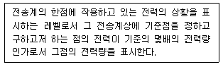
- dB
- dBm
- dBr
- dBa
(정답률: 알수없음)
4과목: 전자계산기일반 및 선로설비기준
61. 다음 중에서 마이크로 프로세서의 특징이 아닌 것은?
- 구성이 간단하다.
- 신뢰성이 향상된다.
- 대부분 LSI로 구성되어있어 시스템의 크기가 작다.
- 시스템 설치 후 기능 변경이나 확장이 어렵다.
(정답률: 알수없음)
62. 기억장치의 내용을 보기 위하여 화면이나 프린터 등으로 뽑아보는 것을 무엇이라고 하는가?
- Debugging
- Dump
- Coding
- Loader
(정답률: 알수없음)
63. 정보통신 공사업자의 변경사항에 대하여 정보통신부장관에게 신고하여야 하는데 그 신고사항에 해당하지 않는 것은?
- 정보통신 기술자
- 대표자
- 영업소의 소재지
- 직원 명단
(정답률: 알수없음)
64. 복수개의 입출력 단자를 가지며 입력단자중 한 단자에 신호(1 bit)가 가해질 때 출력단자에는 그에 대응된 신호(nbit)가 나온다. 이와 같은 회로를 무엇이라고 하는가?
- 디코더(decoder)
- 엔코더(encoder)
- 레지스터(register)
- 카운터(counter)
(정답률: 알수없음)
65. 컴퓨터의 주메모리(main memory)장치에 널리 사용 되는 것은?
- 자기테이프
- 플로피 디스크
- 하드 디스크
- 반도체 IC 메모리
(정답률: 알수없음)
66. 전기통신설비의 기술기준에서 설계도서에 의하여 행하여야 할 전기통신설비의 건설과 보전의 범위는 무엇으로 정하는가?
- 이용약관
- 정보통신부령
- 국무총리령
- 대통령령
(정답률: 알수없음)
67. 선로공사를 위하여 한국전기통신 공사가 소관청의 허가를 받아야 사용할 수 있는 것은?
- 공유수면
- 철도구내의 토지
- 공유의 토지
- 공공의 영조물
(정답률: 알수없음)
68. 다음 중 도형을 입력시키는 장치가 아닌 것은?
- digitizer
- light pen
- mark reader
- tablet
(정답률: 알수없음)
69. 다음 중 구내통신선로설비에서 구내단자함 및 단자반의 요건이 틀린 것은?
- 단자반의 단자수는 10 단자를 기본으로 한다.
- 단자함은 배선영역의 중심부에 설치한다.
- 구내교환설비와 주배선반은 교환실내에 설치한다.
- 하나의 장소에 5회선이상이 수용되는 경우에는 구내단자함을 설치한다.
(정답률: 알수없음)
70. ASCII 코드에서 문자 표시는 몇 비트 (bit)로 구성되어 있는가?
- 5
- 6
- 7
- 8
(정답률: 알수없음)
71. 전기통신기본법의 제정목적이 아닌 것은?
- 전기통신에 관한 기본적 사항 규정
- 전기통신사업의 발전과 이용의 편의 도모
- 전기통신의 발전 촉진으로 공공복리 증진
- 전기통신의 효율적 관리
(정답률: 알수없음)
72. 정보통신공사업자 이외의 자도 시공할 수 있는 공사는?
- 전파법령에 의한 무선설비공사
- 간이무선국의 설치공사
- 방송관계법령에 의한 방송설비공사
- 인입국선이 50회선 이상인 구내통신선로설비공사
(정답률: 알수없음)
73. 부가통신사업을 경영하고자 하는 경우 누구에게 신고하여야 하는가?
- 한국전기통신공사장
- 재정경제원장관
- 정보통신공사협회장
- 정보통신부장관
(정답률: 알수없음)
74. 마지막으로 입력한 것이 제일먼저 출력된다면 이 S/W의 자료구조는?
- FIFO
- LIFO
- LILO
- FILO
(정답률: 알수없음)
75. 컴퓨터의 본체 구성에서 주요 기본장치가 아닌 것은?
- 제어장치
- 기억장치
- 연산장치
- 정보처리장치
(정답률: 알수없음)
76. 전화급 평형회선의 누화감쇠량의 한계치는?
- 90[㏈] 이상
- 68[㏈] 이상
- 55[㏈] 이상
- 40[㏈] 이상
(정답률: 알수없음)
77. 데이터의 길이가 2byte이면 몇 니블(nibble)에 해당되는가?
- 2
- 4
- 6
- 8
(정답률: 알수없음)
78. 운영체제(OS)의 목적과 관계가 먼 것은?
- 처리능력의 증대
- 응답시간의 단축
- 신뢰도의 향상
- 응용소프트웨어의 개발
(정답률: 알수없음)
79. 다음은 구내통신선로설비의 기술표준 범례중 세대단다함(국선용)을 나타낸 것은?
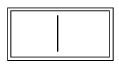
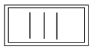
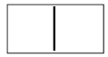
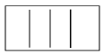
(정답률: 알수없음)
80. 다음 중 전화가입계약을 반드시(무조건) 해지하는 경우가 아닌 것은?
- 전화가입자가 점검을 거부하거나 방해한 때
- 타인명의를 사용한 청약임을 발견된 때
- 허위서류를 첨부한 청약임이 발견된 때
- 전화업무 취급국의 종류변경에 따른 설비비등 의 차액을 소정기한 내에 납입하지 아니한 때
(정답률: 알수없음)